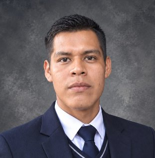
Luis Fernando Chuto Nauya
QR codes & registrationGenerates and tests the QR codes and links for attendance registration.
Planning, teamwork and preparation of a real academic event for future English teachers.
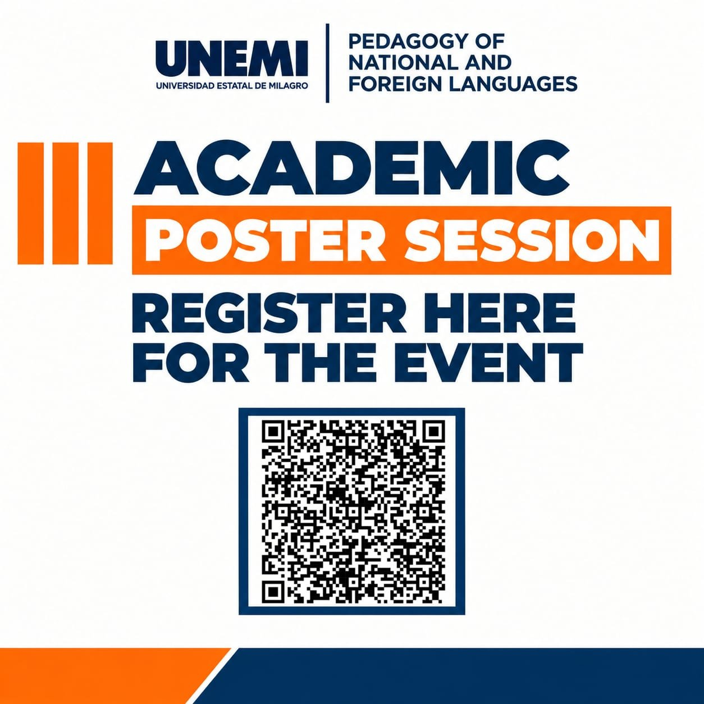
Faculty of Education · Pedagogy of National and Foreign Languages Programme · Universidad Estatal de Milagro.
III Academic Poster Session (Poster Session)
October 13th · Auditorium W
Pedagogy of National and Foreign Languages students
To successfully showcase students' research, encourage knowledge sharing and provide an organized and accessible poster session for all participants.
To enable students and future English teachers to broaden their understanding, hone their expertise, and enrich their pedagogical and methodological techniques and strategies in the sphere of English language teaching and learning.
A Poster Session where students present their research projects and share their findings with other participants in an academic setting.
Group A: students of 7th semester, B1. Every member has an identifiable role in the organization of the event.

Generates and tests the QR codes and links for attendance registration.
In charge of the audio booth in the auditorium.
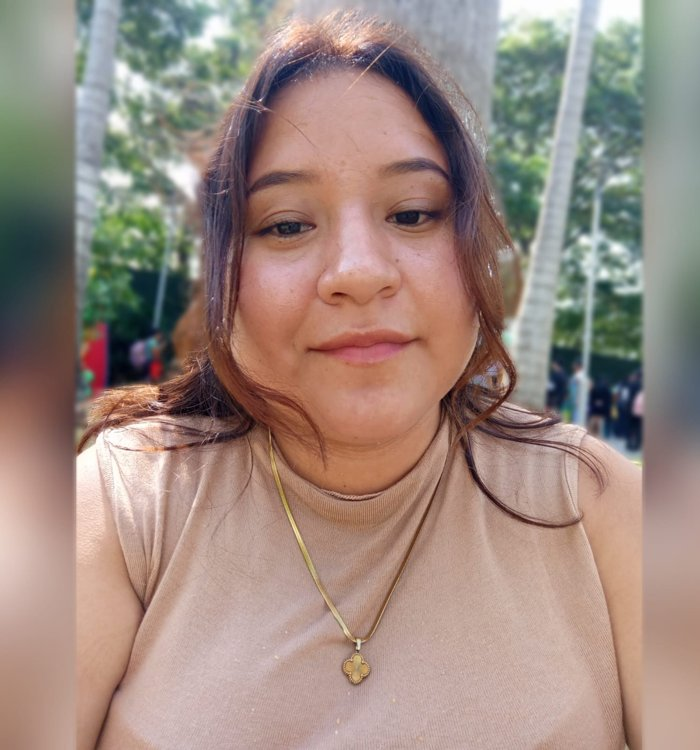
Provides real-time tech support during the event.
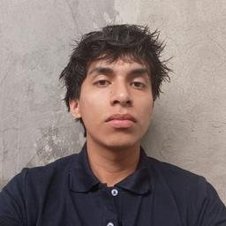
Provides real-time tech support during the event.
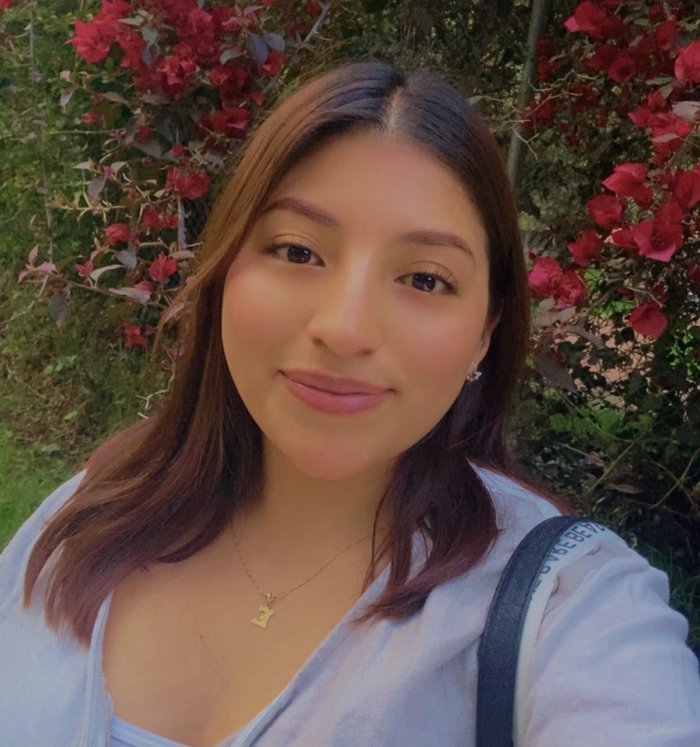
Selects the background music and the sound cues for speaker timing.
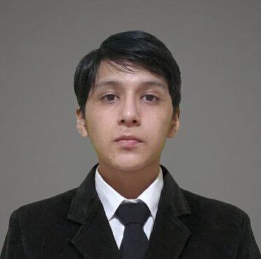
Generates and tests the QR codes and links for attendance registration.
Selects the background music that matches the theme of the event.
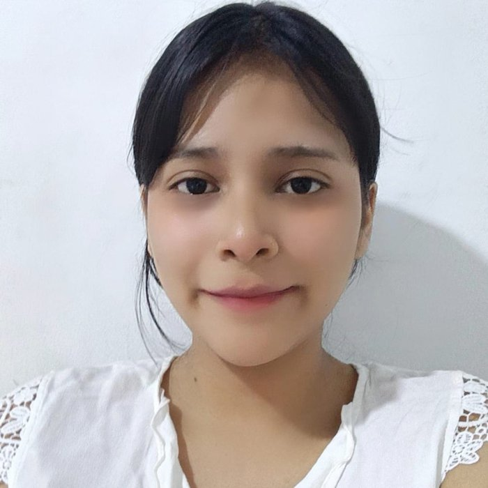
Collects the posters and uploads them to the online platform.
Real evidence of the work completed while preparing the event: meetings, role selection and registration materials.
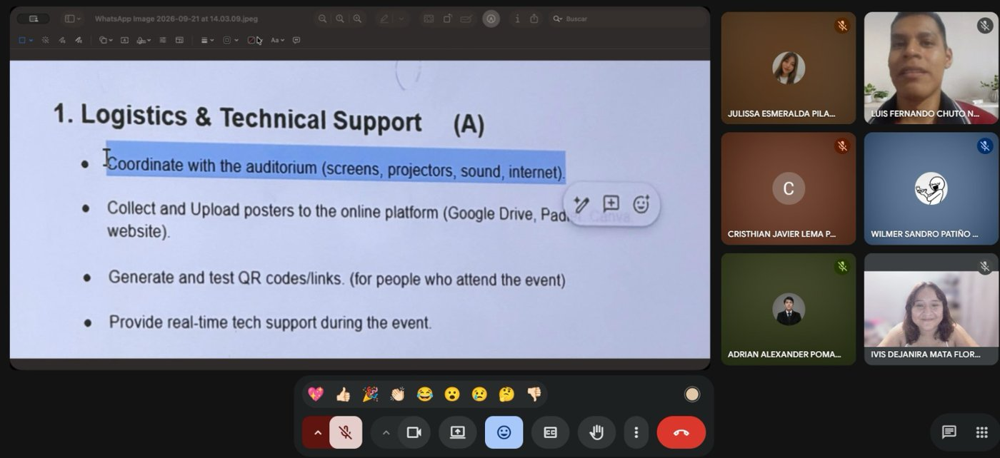
Meeting to establish the various roles to be performed regarding logistics and technical support.
/ Responsible: all group members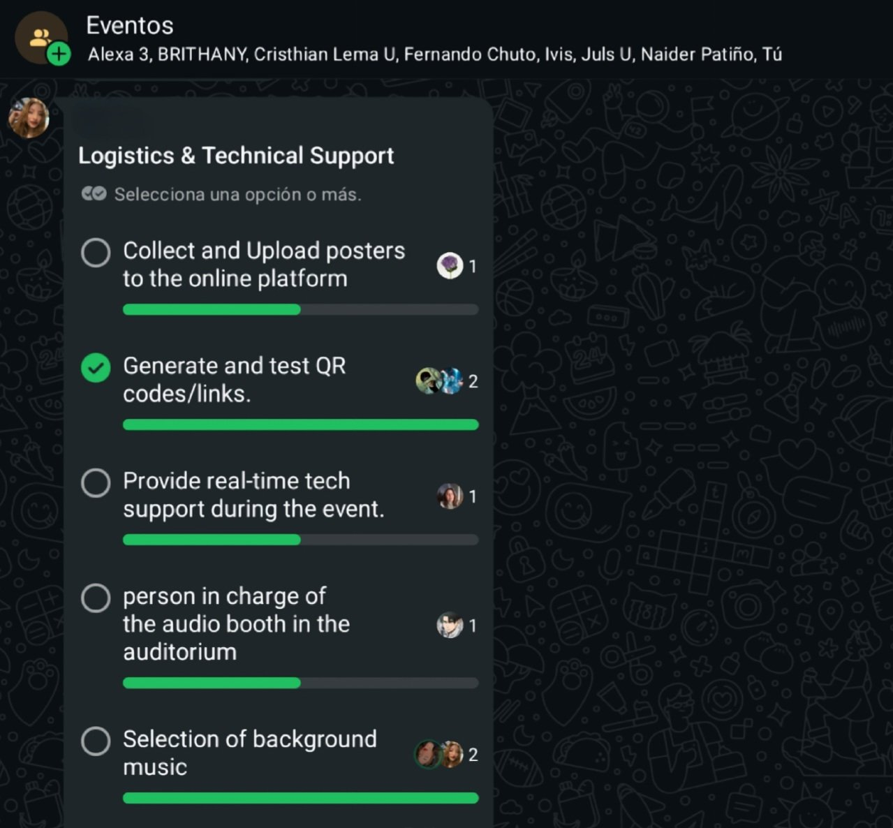
Poll in the group chat to select the roles to be performed by each group member.
/ Responsible: all group membersDesign and creation of the QR code for registering attendance at the event.
/ Responsible: Luis Fernando Chuto & Adrian PomagualliMy responsibility is to collect the posters from the participants and upload them to the online platform for the poster session event. So far, I have organized the posters I have received and checked that they are ready to be uploaded to the platform. I still have to actually upload the posters to the online platform before the event. My work helps ensure that all the posters are available online and easily accessible to participants and attendees; this contributes to the organization of the poster session and helps the event run smoothly.
My role involves searching through a wide selection of music to find tracks that suit the event's theme (in this case, an academic event) to create a calm, pleasant atmosphere for all attendees. I am also responsible for choosing subtle sound cues to alert participants and moderators when their time is running out, helping them manage their time more effectively.
The task assigned to us is to create a registration form for the academic poster session. The form is currently being tested, as we need to verify that it only accepts university email addresses. Additionally, the QR code is being tested to ensure it remains active until the day of the presentation. The only remaining task is to convert the test code to a QR code a few days before the event. Our work will contribute to gathering attendance data for this excellent event, the third edition of the academic poster session. This will help ensure the event is well-received by the audience attending the National and Foreign Language Pedagogy program.
I am responsible for managing sound and audio playback during the event. My duties include ensuring balanced volume levels for all auditorium microphones. So far, I have identified all sound requirements (batteries for the microphones). I must conduct an audio test prior to the event to ensure sound quality. Clear audio is essential for effective communication, especially in these events where the audience needs to hear every speech, presentation and multimedia resource without distortion or interruptions. By keeping the sound seamless and balanced, my work helps maintain professional standards and ensures the audience stays fully engaged.
My responsibility is to select the background music for the event and make sure it matches the theme and atmosphere. So far, I have researched and chosen suitable songs for different moments of the event. Considering their rhythm and mood, I still need to finalize the playlist and organize the songs in the correct order. My work contributes to the success of the event by creating a pleasant atmosphere, keeping the audience engaged and making each moment more enjoyable.
Our responsibility is to provide technical support during the event. We will assist participants, presenters, and moderators if they have any issues with presentations, audio, video, internet connection, or the online platform. We will also be attentive during the activities in case any technical problems arise and try to resolve them as quickly as possible. This will ensure the event continues smoothly and avoids unnecessary disruptions.
The III Academic Poster Session took place on October 13th in Auditorium W. These are the best real photographs of the day: opening, presentations, awards and the team behind the event.
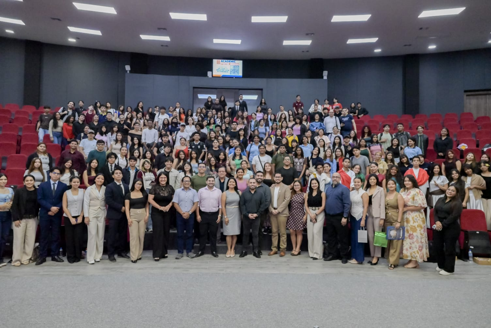
Participants, guests and the organizing team together at the end of the III Academic Poster Session.
/ All group members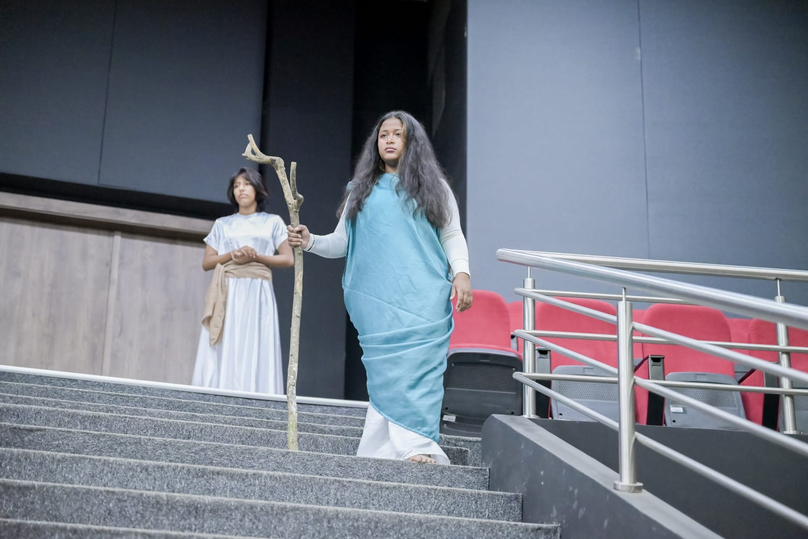
A theatrical act presented on stage before the academic presentations began.
/ Group members · cultural act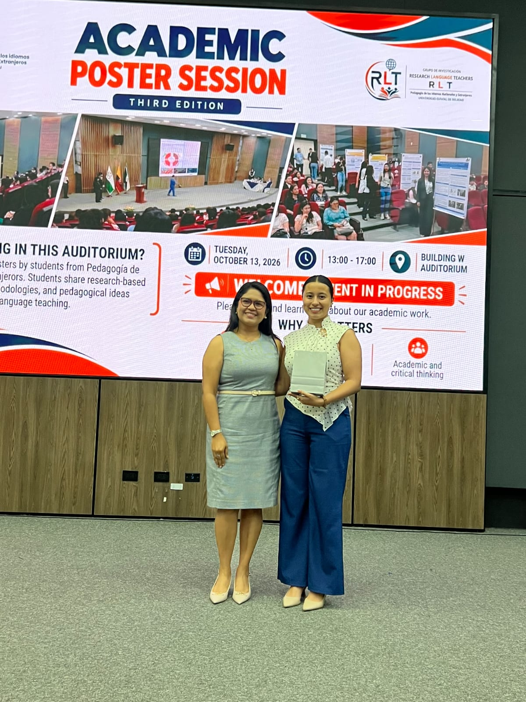
Members of the team pose in front of the welcome screen minutes after the event opened.
/ Organizing team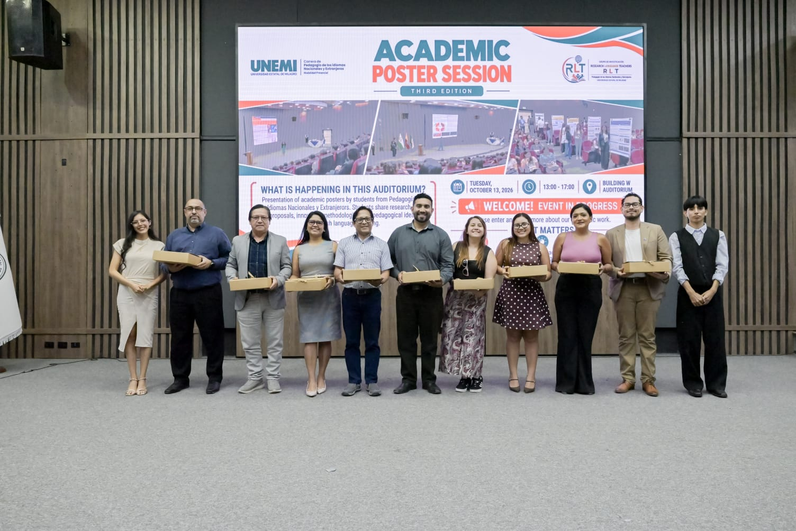
Delivery of recognition boxes to the people who made the event possible.
/ All group members · logistics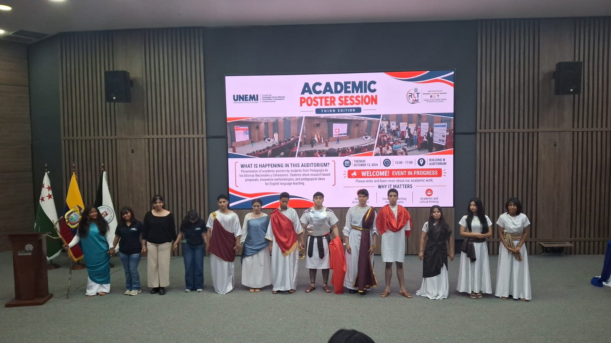
Students in period costumes during the opening ceremony, next to the university flags.
/ Group members · cultural actA guest speaker welcomes the audience and introduces the purpose of the poster session.
/ Audio booth: Cristhian Lema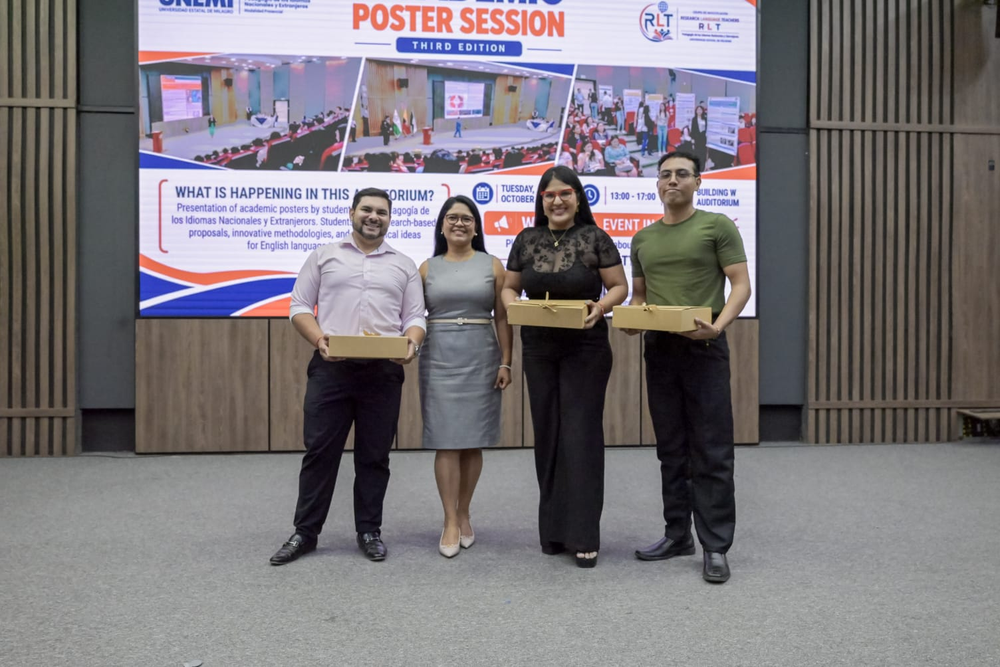
Organizers and guests with the recognition boxes handed out at the end of the event.
/ All group members · logistics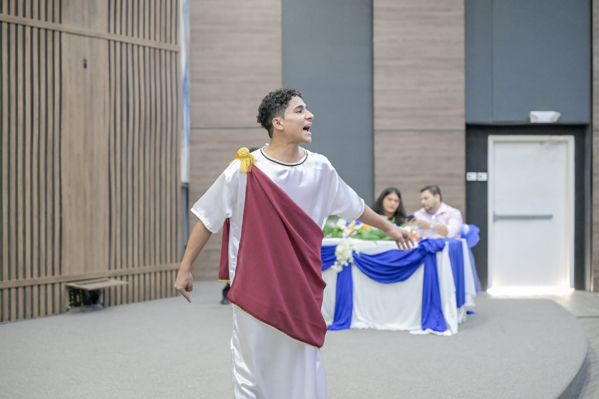
A student performs a monologue as part of the cultural program before the poster presentations.
/ Group members · cultural act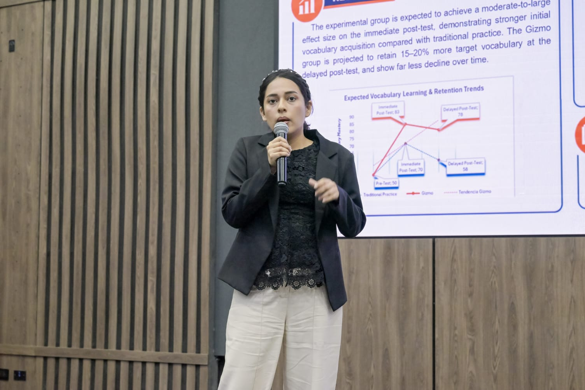
A student presents the results of her research project to the audience.
/ Tech support: Ivis Mata & Wilmer Patiño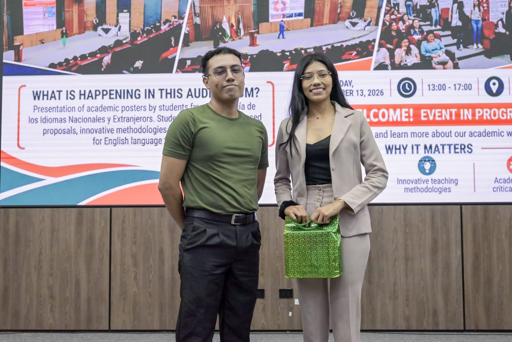
Two attendees pose with their gift after taking part in the academic activities.
/ Registration: Luis Chuto & Adrian Pomagualli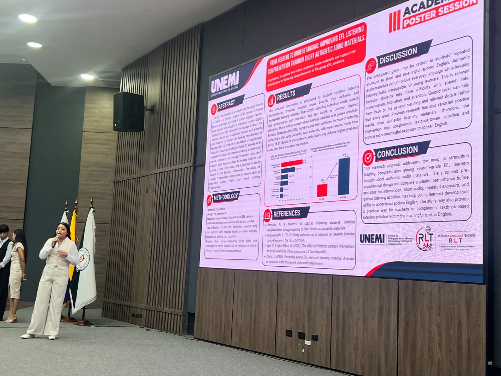
A presenter explains her research poster to the audience during the session.
/ Posters & platform: Alexa Zorrilla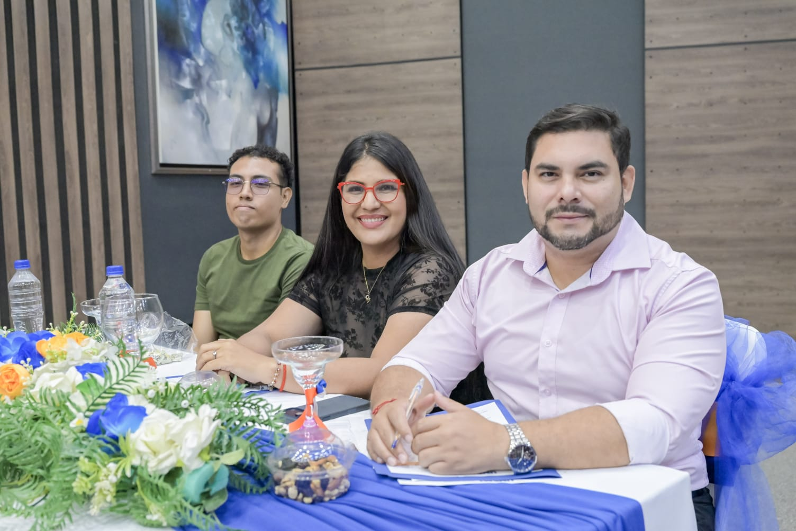
Judges follow the presentations from the main table during the event.
/ Logistics & protocol team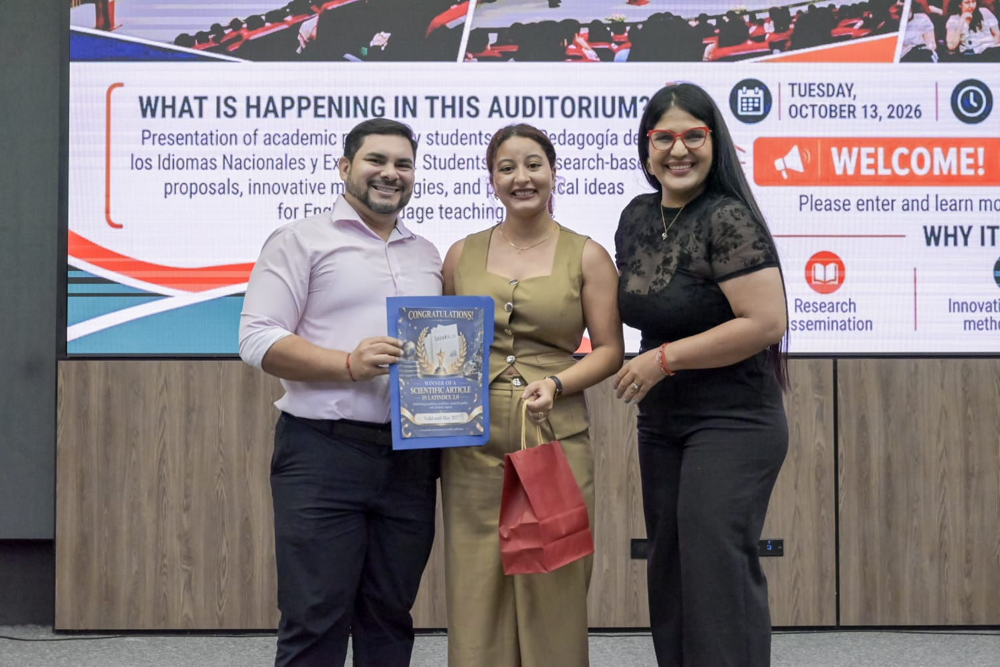
Announcement of the winners and delivery of the scientific article awards.
/ All group members · protocolEvent video: the 3–5 minute video documenting the event will be added to this section. All photographs are real evidence captured by the group during the preparation and execution of the III Academic Poster Session.